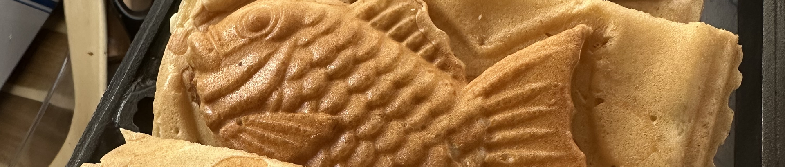

겨울철 최고의 간식, 붕어빵
붕어빵은 모양의 틀에 밀가루 반죽을 넣고 팥소를 채워 구워낸 한국의 대표적인 길거리 간식입니다. 추운 겨울날 호호 불어가며 먹는 따뜻한 붕어빵은 우리에게 포근한 추억과 행복을 선사합니다. 겉은 바삭하고 속은 달콤한 팥앙금이 가득한 붕어빵은 남녀노소 누구나 좋아하는 국민 간식이에요. 최근에는 다양한 재료를 퓨전 붕어빵도 인기를 끌고 있습니다.

붕어빵은 모양의 틀에 밀가루 반죽을 넣고 팥소를 채워 구워낸 한국의 대표적인 길거리 간식입니다. 추운 겨울날 호호 불어가며 먹는 따뜻한 붕어빵은 우리에게 포근한 추억과 행복을 선사합니다. 겉은 바삭하고 속은 달콤한 팥앙금이 가득한 붕어빵은 남녀노소 누구나 좋아하는 국민 간식이에요. 최근에는 다양한 재료를 퓨전 붕어빵도 인기를 끌고 있습니다.
높은 온도에서 구워진 겉면이 고소한 식감을 자랑합니다.
전통적인 붕어빵은 고운 팥앙금으로 속을 채워 달콤하면서도 부드러운 맛을 냅니다.
갓 구워낸 붕어빵의 따뜻함은 추운 겨울철 우리의 몸과 마음을 녹여줍니다.
붕어 모양의 외형은 보는 것만으로도 즐거움을 선사합니다.